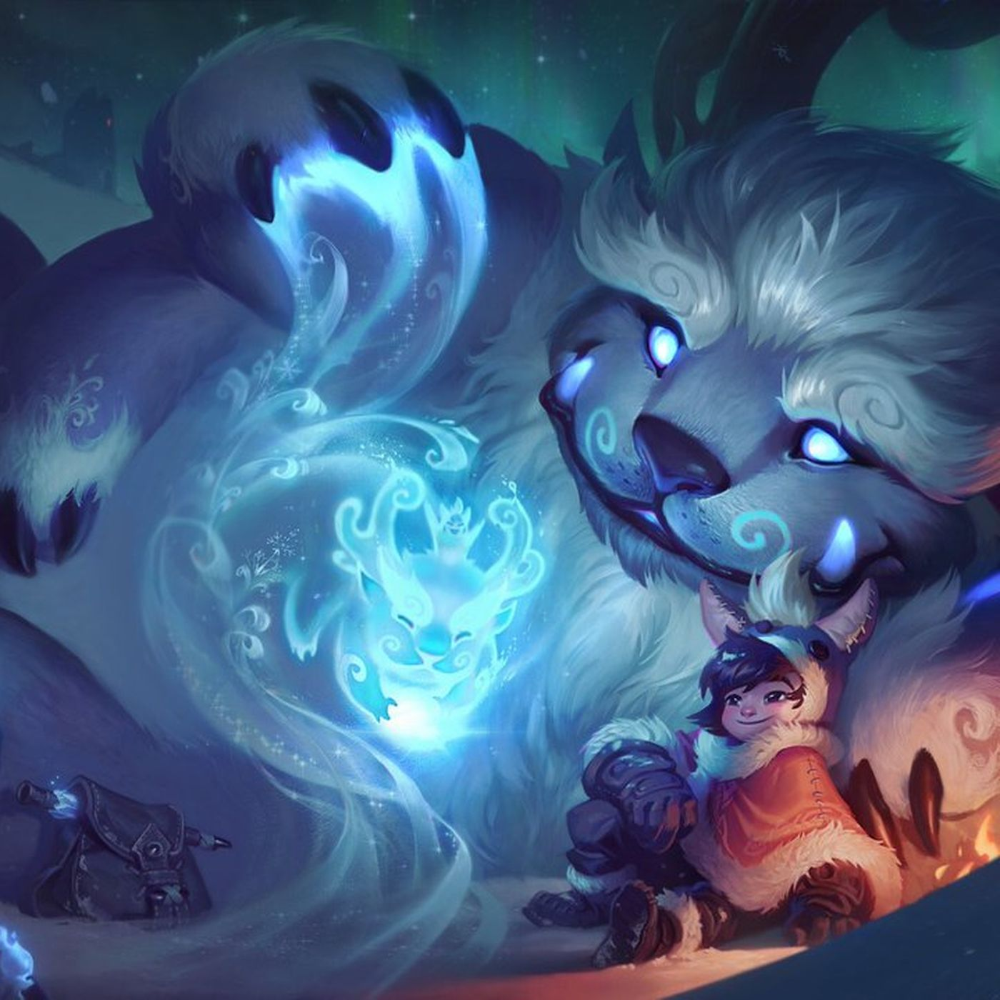

¡Reworks y mas reworks!
Esta vez, Rito Games aparte de traernos dos nuevos champs, los cuales aun no son anunciados, nos traen mas Reworks.

Este año comenzaron por Irelia, con un Rework fantastico. Luego Atrox, el cual para muchos "mains" Atrox no fue lo ideal, ya que para ellos "Le quitaron potencia al champ". Seguido de esto vino el rework a Akali con unos splasharts increibles y una jugabilidad magnifica, conciderada por muchos un Broken champ
Proximos reworks anunciados: Nunu, el cual ya esta desarrollado y esta siendo testeado.
Proximamente Reworks de:
- Morgana: Rework total.
- Malphite: Rework total.
- Ezreal: Mejora de habilidades.
- Nocturne: mejora por ser poco jugado.